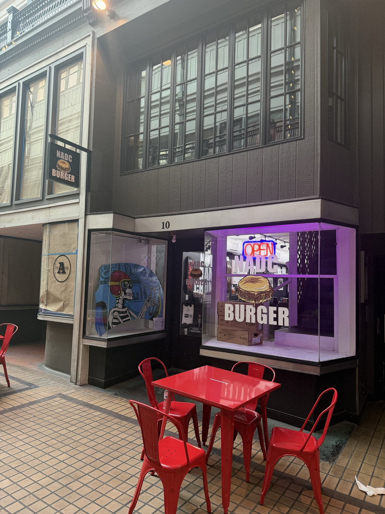
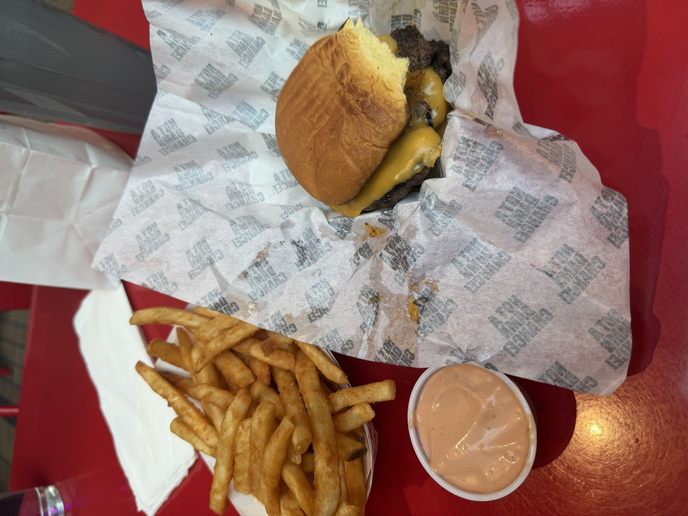
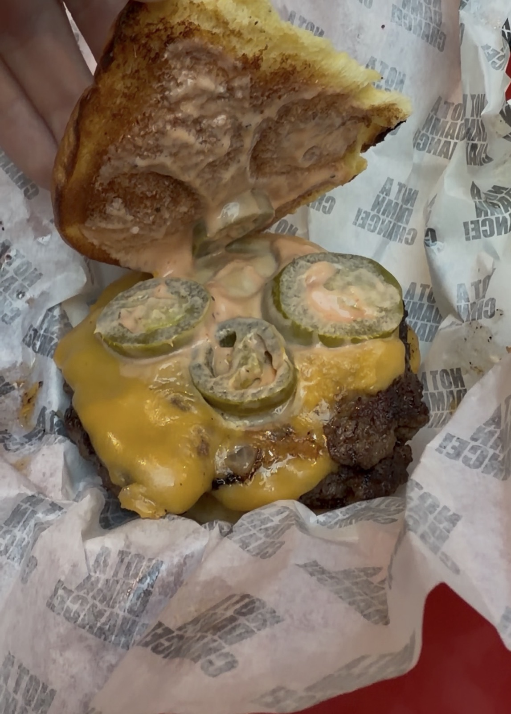

NADC Burger with everything, a side of fries, and their secret sauce.
🏠 10 The Arcade, Ste. 10, Nashville, TN 37219
🌐 nadcburger.com/locations
❤️ Great For:
NADC, short for "Not A Damn Chance," is a single-item burger concept with a Nashville outpost tucked inside the historic Arcade downtown. True to its stripped-down format, there's just one burger on the menu: two smashed 3 oz patties of 100% Wagyu beef, American cheese, a tangy secret sauce, onions, pickles, and jalapeños on a griddled bun, backed up by a short drink list and a brown-butter chocolate chip cookie for dessert.



NADC Burger with everything, a side of fries, and their secret sauce.
NADC Burger appears on: